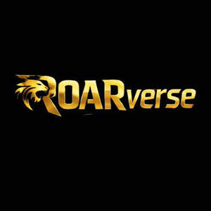

Trade Mark Journal No.2026/003 16 January 2026
UK00004316909 29 December 2025 (9,41,42)

- Class 9
- Digital music downloadable from the Internet; Downloadable digital music; Digital media streaming devices; Digital storage media; Digital solutions provider [DSP] software; Digital music players; Digital recording media; Downloadable digital assets; Software for embedding online advertising on websites; Downloadable software; Downloadable software applications; Software downloadable from the internet; Smartphone software applications, downloadable; Computer software for processing digital music files; Downloadable software applications for mobile phones; Downloadable software, namely virtual clothing; Computer software downloadable from the internet; Downloadable digital photos; Downloadable software, namely virtual bags; Digital music downloadable provided from MP3 internet websites; Digital music downloadable provided from a computer database or the internet; Digital music downloadable provided from the internet; Downloadable cloud computing software; Downloadable software in the nature of a mobile application; Interactive software; Downloadable application software for smart phones; Multimedia software; Downloadable smart phone applications (software); Digital music downloadable provided from MP3 internet web sites; Downloadable digital music provided from MP3 Internet web sites; Computer software for the display of digital media; Downloadable computer software for the transmission of data; Computer programs for processing digital music files; Downloadable instant messaging software; Interactive video software; E-commerce software; Computer software downloadable from global computer networks; Collaboration software platforms [software]; Downloadable computer software for managing cryptocurrency transactions using blockchain technology; Mobile software; Music software; Computer software for wireless content delivery; Computer programs, downloadable; Downloadable computer programs; Interactive entertainment software for use with computers; Graphics software; Digital music [downloadable] provided from mp3 web sites on the internet; Downloadable smart phone application software; Computer programs and software for image processing used for mobile phones; Downloadable electronic brochures; Publications in electronic format [downloadable]; Computer software packages; Interactive computer software; Software for online messaging; Downloadable mobile applications; Computer software to enhance the audio-visual capabilities of multimedia applications; Software for use in advertising; Integrated software packages.
- Class 41
- Entertainment services; Cultural services; Musical entertainment services; Music entertainment services; Hospitality services (entertainment); Entertainment services in the nature of arranging social entertainment events; Entertainment services in the nature of organizing social entertainment events; Interactive entertainment services; Entertainment, sporting and cultural activities; Entertainment information services; Entertainment booking services; Online entertainment services; Live entertainment services; Organisation of entertainment and cultural events; Entertainment; Consultancy services in the field of entertainment; Musical education services; Live entertainment production services; Advisory services relating to entertainment; Educational services; Ticket reservation and booking services for education, entertainment and sports activities and events; Organisation of events for cultural, entertainment and sporting purposes; Ticket information services for entertainment events; Ticket agency services [entertainment]; Entertainment ticket agency services; Provision of musical entertainment; Road shows being entertainment services; Providing cultural activities; Musical entertainment; Services providing entertainment in the form of live musical performances; Entertainment in the form of live musical performances (Services providing -); Educational and instruction services relating to arts and crafts; Education services relating to music; Music festival services; Cultural activities; Entertainer services; Entertainment services in the form of concert performances; Online digital publishing services; Providing digital music from the internet; Digital video, audio and multimedia entertainment publishing services; Providing digital music from mp3 internet web sites; Providing digital music [not downloadable] from the internet; Providing digital music [not downloadable] for the internet; Electronic publishing services.
- Class 42
- Computer technology consultancy; Computer software design services; Services for the design of computer software; Software as a service [SaaS] featuring software for machine learning; Design and development of computer hardware and software; Computer software development; Development of computer software; Computer software integration; Software as a service [SaaS] featuring computer software platforms for artificial intelligence; Computer software design; Design and development of computer software; Computer software design and development; Software development; Development of software; Design and development of computer software architecture; Design and development of computer database software; Smartphone software design; Programming of software for e-commerce platforms; Development and maintenance of computer software; Design and development of operating software for cloud computing networks; Consultancy relating to the design and development of computer software programs; Development services relating to computer software application solutions; Hosting of digital content online; Cross-platform conversion of digital content into other forms of digital content; Hosting of digital content; Encryption of digital music; Electronic storage of digital music; Hosting of digital content on the Internet; Electronic storage of digital images; Encryption of digital images; Hosting electronic memory space on the Internet for advertising goods and services.
Lions Roar Limited